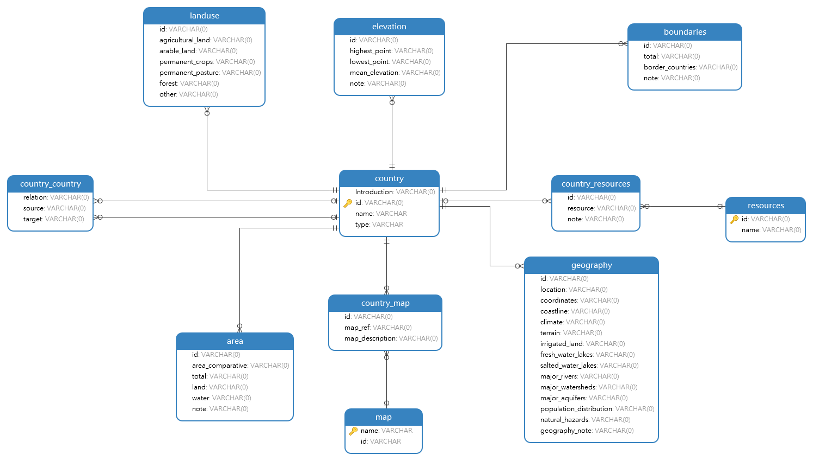

L'objectif de ce TD est de réviser l'écriture d'un modèle de données avec la représentation des tables en objets SQLAlchemy, de découvrir le requêtage de la base via l'ORM, puis d'écrire des données et enfin voir comment paginer les résultats. On s'intéressera plus ici à SQLAlchemy qu'aux templates ou aux routes: routes et templates seront donc très simples, ce qui importera sera d'utiliser l'ORM pour interagir avec les données.
Afin que tout le monde réalise ce TD sur une application Flask sans erreurs et correctement configurée:
.envPour rappel, le modèle de données du factbook est le suivant : 
Il manque, dans le module factbook des models, la représentation de deux tables physiquement présentes:
resources: écrire la classe représentant cette tablecountry_resources : écrire ce qu'il faut pour lier la table resources et la table country. Si besoin, s'inspirer de ce qui est fait pour country_mapsAfin de ne plus se préoccuper des templates par la suite, il vaut mieux en créer un générique rapidement. Toutes les routes écrites par la suite appeleront ce template en lui donnant des données différentes en paramètre.
Ecrire le template pages/generique.html selon les critères suivants:
donneesnom, type, description{{pays.name}}, {{pays.type}}, {{pays.Introduction}}Ainsi, les futures routes seront par exemple:
@app.route("/uneroute")
def uneroute():
resultats = # mettre ici la requête ORM de récupération des données
return render_template("pages/generique.html", donnees=resultats)
Nous avons déjà vu en Séance 3 l'utilisation de Country.query.all() qui permet de ramener tous les résultats de la table Country. Grâce à la documentation, écrire les routes suivantes:
/tous_pays: affiche tous les pays de la table Country/le_premier_pays: affiche le premier pays de la table Countryfilter() est un des membres de query. Il permet de filtrer les données de la table relationnelle. Afin d'avoir les potentiels résultats en retour, il est nécessaire d'appeler all() ou first() à la suite. filter() prend autant de paramètres qu'il y a de conditions. Une condition s'exprime ainsi:
query.filter(Classe_du_modele.champ operateur_de_comparaison Valeur)
Ecrire les routes suivantes:
/pays_differents_de_souverain: affiche tous les pays dont le type n'est pas "sovereign"/condition_or_autre_condition: affiche tous les pays qui sont soit de type "sovereign" ou bien dont l'id est "ay". L'utilisation de cette documentation est conseillée.Les fonctions d'aggrégation telles que COUNT, GROUP BY, HAVING et ORDER BY sont essentielles en SQL et sont reprises avec SQLAlchemy.
Ecrire la route suivante:
/pays_souverains_autres_ranges_ordre_decroissant: affiche tous les pays souverains ou de type other, rangés par ordre alphabétique décroissant. Cette documentation est toujours utile, en plus de celle-ci.Cette partie du TD reprend ce qui est dit dans le cours. Essayer de l'implémenter dans l'application.
Cette méthode est à privilègier dès lors que les jointures sont simples puisqu'elles sont incluses dans la déclaration des classes du modèle de base de données.
Lors de la création des classes dans models/factbook.py, nous avons créé des champs qui ne sont pas physiquement dans les tables grâce à db.relationship(). Pour la classe Country(), c'est notamment le cas de resources.
Dès lors qu'une relation est indiquée dans une classe, l'objet sur lequel pointe la relation est accessible depuis notre objet requêté. Prenons l'exemple des ressources des pays:
# models/factbook.py Country()
...
resources = db.relationship(
'Resources',
secondary=country_resources,
backref="resources"
)
...
resources renvoie vers la table country_resources, qui a été décalrée en tout début de modèle.country_resources a elle-même une relation, grâce à une clé étrangère, vers la classe Resources:# models/factbook.py Country()
...
db.Column('resource', db.String(100), db.ForeignKey('resources.id'), primary_key=True)
...
Les objets de la Resources liés aux objets Country via la table country_resources sont alors accessibles depuis les objets Country sans avoir à le spécifier dans la requête SQLAlchemy.
Avec SQLAlchemy, il suffit donc de faire la requête suivante:
Country.query.all()
Tout s'effectue ensuite dans la manière d'appeler les attributs de classes; par exemple, pour obtenir le nom de la ressource, il faut écrire : country.resources.name (où country est un des objets de la liste de résultats).
Créer une route /ressources qui affiche les ressources d'un pays donné en paramètre (le template n'est pas à créer, il est déjà fourni dans pages/):
@app.route("/ressources/<string:nom>")
def ressources(nom):
ressources = []
query = Country.query
ressources = query.filter(Country.name == nom).first()
return render_template("pages/pays_ressources.html", pays=nom, ressources=ressources, sous_titre=nom)
Puisqu'un seul pays est indiqué en paramètre et passé en filtre, il est suffisant de faire un first() dans la requête.
Accéder à cette route n'est pas simple pour l'utilisateur (il doit taper l'URL /ressources/France par exemple). Dans le template pages/generique.html, ajouter, sur chaque nom dans la colonne "nom", un lien vers la route "/ressources/string:nom".
S'il y a le temps, creuser les jointures avec le cours sur les jointures spécifiées manuellement : Seance4_requetes.html#join et /Seance4_requetes.html#union
/ajout_pays/<string:id>/<string:name>/<string:type>/<string:rapide_description> qui insère un nouveau pays: elle ne retournera pas de template, mais simplement la chaîne "OK"localhost:5000/ajout_pays/xxxx/Nouveau pays/sovereign/Un nouveau pays: le retour doit être "OK"/get_pays/<string:id> en utilisant le template pages/generique.html: cette route doit renvoyer tous les pays (normalement un seul) correspondant à l'id fourni:
/suppression_pays/<string:id> qui permette de supprimer un pays: elle retournera simplement la chaîne "OK"localhost:5000/suppression_pays/xxxxhttp://localhost:5000/get_pays/xxxx qu'il y a bien aucun résultat# .env
...
PAYS_PER_PAGE=10
# config.py Config()
...
PAYS_PER_PAGE = int(os.environ.get("PAYS_PER_PAGE"))
Il est ensuite temps de modifier la route en ne renvoyant pas un ensemble de résultats au template via all(), mais en renvoyant uniquement l'objet Pagination résultant de paginate().
# routes/generales.py
...
@app.route("/pays_pagination/<int:page>")
def pays_pagination(page):
donnees = []
query = Country.query
tous_resultats = query.paginate(page=page, per_page=app.config["PAYS_PER_PAGE"])
return render_template("pages/pays_pagination.html", donnees=tous_resultats, sous_titre="Tous les pays")
Une fois l'objet Pagination (tous_resultats dans notre cas) transmis au template, tout se fait dans ce dernier.
<!-- templates/pages/pays_pagination.html-->
{%if pagination%}
<table class="table">
<thead>
<tr>
<th scope="col">#</th>
<th scope="col">Nom</th>
<th scope="col">Type</th>
<th scope="col">Description</th>
</tr>
</thead>
<tbody>
{%for pays in pagination.items%}
<tr>
<th scope="row">{{loop.index}}</th>
<td>{{pays.name}}</td>
<td>{{pays.type}}</td>
<td>{{pays.Introduction}}</td>
</tr>
{%endfor%}
</tbody>
</table>
{%endif%}
all(), l'itération se fait ici sur l'objet Pagination .itemsCountry dans notre cas, comme ce que l'on trouvait auparavant dans la liste de résultats allAfin d'afficher une barre de navigation entre les pages, paginate nous aide à nouveau.
<!--templates/pages/pays_pagination.html -->
...
<div class="container">
<nav aria-label="research-pagination">
<ul class="pagination">
{%- for page in pagination.iter_pages() %}
{% if page %}
{% if page != pagination.page %}
<li class="page-item">
<a class="page-link" href="{{ url_for("pays", page=page+1) }}">{{page}}</a>
</li>
{% else %}
<li class="page-item active disabled">
<a class="page-link">{{page}} <span class="sr-only">(actuelle)</span></a>
</li>
{% endif %}
{% else %}
<li class="page-item disabled">
<a class="page-link">...</a>
</li>
{% endif %}
{%- endfor %}
</ul>
</nav>
</div>
...